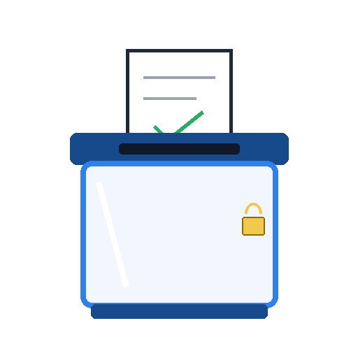

01
DEMOCRATIE

Être élu·e
Au CME, je peux…
Participer à une élection : se présenter, expliquer ses idées, voter dans le respect des règles.
Défi
Quelle promesse réaliste pourrais-tu faire à tes camarades ?